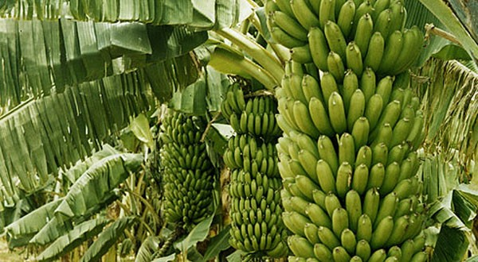

|
From ancient to nowadays, banana contained in literature, movie, even fashion, and these are all banana’s culture. In the ancient, African societies used banana sap as a dye to stain patterns onto fabric, and made necklaces out of wild banana seeds, and it is the first time banana using a different way go into people's lives. As the banana gained importance as an export fruit, it simultaneously gained importance in the popular culture of Europe and America. From literature to music, bananas contributed to the development of popular culture, including, in some cases, becoming endowed with symbolic meanings. The burgeoning silent movie industry made liberal use of the supposed frictionless quality of the banana peel in countless instances of physical comedy. In 1929, William Faulkner featured a symbolic banana in his novel As I Lay Dying, and the banana musicians throughout the twentieth century appropriated the plantain for lyrical symbolism. In 1923, Frank Silver and Irving Cohn released a song entitled “Yes, We Have No Bananas!” to great fanfare. That seems banana is essential to the literature. |
 |
|
Banana is also a good material in making food, for example, the French dessert product made of banana flour and cocoa “Banania” featured a highly caricatured image of a black man, replete with a pidgin phrase, to help sell the product. Nowadays, as we all know there is a brand called banana republic, and it is and American clothing and accessories retailer owned by American multinational corporation. It also has a long history, and we will see it in everywhere. People also introduce bananas in movie, in “Despicable me”, there are some “little man” who are yellow color and always like to eat bananas. |